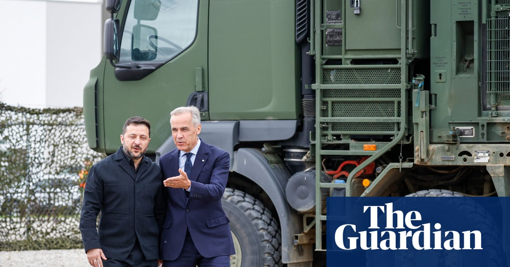

World · 15 Sep 2026
Carney Welcomes International Leaders to Canada Amid Economic and Defense Talks

Canadian Prime Minister Mark Carney has hosted significant diplomatic and economic events, including welcoming Ukrainian President Volodymyr Zelenskyy to discuss enhanced defense support and drone supplies.
Canadian Prime Minister Mark Carney has hosted significant diplomatic and economic events, including welcoming Ukrainian President Volodymyr Zelenskyy to discuss enhanced defense support and drone supplies.
Putching Canada as a Global Safe Harbour
Prime Minister Mark Carney pitched Canada as a "safe harbour" for some of the world's largest investors during an era marked by geopolitical and economic uncertainty. Speaking to more than 100 major investors in Toronto, Carney pledged to attract C$1tn ($720bn; £530bn) in investments over the next five years to help reduce Canada's reliance on the United States. The high-stakes summit served as a test of whether his administration can deliver on promises to strengthen economic resilience amid trade disputes that have pushed the country to seek deeper economic partnerships with Europe, Asia, and the Middle East.
Carney told financiers representing more than C$120tn of assets that the summit offered a chance to "come to 'peer into our shop window'" with more than 160 projects on offer, ranging from data centres to pipelines and port expansions. Ottawa dangled new tax incentives, including a "mega deduction" measure, and promised faster approvals with a one-year review timeline for major proposed projects to provide predictability.
Infrastructure and Airport Privatisation Plans
Among the major announcements emerging from the summit was a plan by Carney to allow private investment in four of Canada's main airports located in Toronto, Vancouver, Montreal, and Calgary. While the federal government would retain ownership of the underlying land and assets, private investments would be permitted in airport operations to raise billions of dollars for transport infrastructure reinvestment.
The proposal drew criticism from labour unions and advocacy groups. Lily Chang of the Canadian Labour Congress stated that handing profitable public infrastructure over to private investors during a trade war was the wrong move, while Nick Barry-Shaw of the Council of Canadians characterized the event as a privatisation summit rather than nation-building. Conversely, sectors like AI infrastructure generated substantial interest, aided by Canada's cold climate, space, and clean energy grid, as noted by Cohere cofounder Aidan Gomez.
By the conclusion of the summit, the prime minister's office reported generating nearly C$500bn in new investments across critical infrastructure, digital technology, energy, and defence sectors.
Navigating US Tensions and European Pivot
Carney's economic strategy unfolds against a backdrop of strained relations with the United States. Following the sudden collapse of trade talks, both nations have imposed tit-for-tat tariffs and engaged in a war of words, with new US tariffs taking effect and further bans anticipated. Despite the tensions, Carney addressed American executives directly in Toronto, emphasizing that Canada will remain the US's most important partner in many key areas.
Simultaneously, protesters gathered outside the opening night gala to accuse the government of organizing a "great Canadian sell-off" of public resources to corporate interests. Following the domestic events, Carney is scheduled to head to Europe to address the EU parliament and initiate discussions to build a unique security and economic alliance, exploring broadened trade opportunities alongside ongoing international engagements, such as defense discussions during Ukrainian President Volodymyr Zelenskyy's visit.
Sources
This article was produced by the C. O. Eric AI Newsroom from the cited sources. It is published only after automated evidence and safety checks.